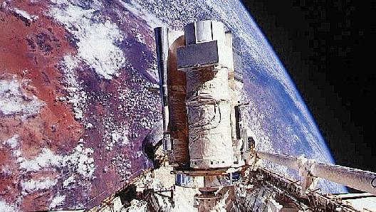
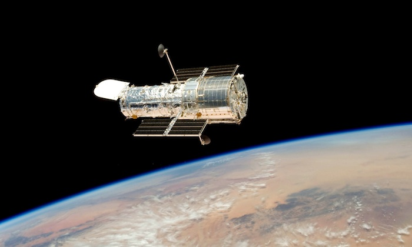
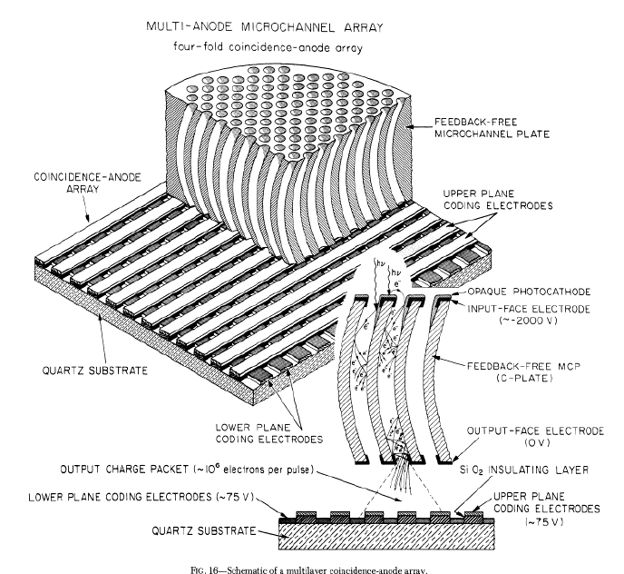
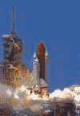

ASTR 511 [R. W. O'Connell]
INTRODUCTION TO ULTRAVIOLET ASTRONOMY

Astro-2 UV observatory in Shuttle payload bay.
A. THE UV BANDS
- Earth's atmosphere is opaque below ~3200 Å.
- The interstellar medium is opaque below 912 Å (Lyman edge of H I)
But the optical depth ~ (λ)3 in the Lyman continuum, so
the ISM becomes transparent again below 400 Å
- Therefore, the easily accessible "vacuum UV" band from space lies
in the range
912-3200 Å
- "Far-UV": 912-2000 Å
- "Mid-UV": 2000-3200 Å (called the "Near-UV" by
some observers)
- With different technology: the "Extreme UV" (70-912 Å)
- The region 3200-4000 Å is usually considered part of the
"optical" band because Earth's atmosphere is reasonably transparent
here, though opacity rises sharply in the shortest 200 Å. This
is an important transition region containing many astrophysical
diagnostics. It is often called the
"Near-UV". This band is often compromised in instrument
design by optical elements with poor reflectivity or transmission
(sometimes chosen deliberately in order to boost near-IR response).
B. MOTIVATION FOR UV OBSERVATIONS
The UV contains
the
highest
density (bits per unit wavelength) of astrophysical information on
stars and gas. The advantages of the UV include:
- Sensitivity to hot continuum sources
- The stellar flux maximum (in F_lam units) occurs at ~ 2900
Å/T4.
The energy distributions of hot stars (over 10,000 K) peak in the UV.
The most important UV-bright stars are massive main sequence stars
over 3 Msun, which are responsible for most element synthesis,
ionization, dissociation, and kinetic energy input to galaxies.
For cooler stars (< 8000 K), the UV lies in the Wien limit, implying
high sensitivity to temperature. (E.g. This allows estimation of the
main sequence turnoff and hence age in the integrated light of older
stellar populations.)
- Hard nonthermal sources
- The "Big Blue Bump" in AGN produced by thermal raiation from the
inner accretion disk surrounding a supermassive black hole
- Large-scale surveys (space and ground) at wavelengths < 4000
Å have permitted identification of huge numbers of hot sources,
e.g. white dwarfs, hot subdwarfs, massive stars in other galaxies,
AGN's/QSO's;
Markarian
galaxies and other systems dominated by very young stellar
populations.
- Numerous atomic & molecular spectral features
- Many strong (often resonance) transitions of important species
occur in UV:
H, D, H2, He, C, N, O, Mg, Si, S, Fe, CN, OH, NH, O3
- Uniquely valuable:
- The HI Lyman series and metallic features in stars, ISM, IGM;
- The Lyman-Werner bands of H2; the first detection of
interstellar H2 was made in the UV
- Atomic deuterium (offset from the normal hydrogen features);
- Carbon abundances from C III, C IV;
- O VI, C IV, N V (gas at 105-6 K);
- Highly ionized species at 106-7 K (e.g. Fe XV in
solar active regions and corona);
- Lyman edge (rest wavelength 912 Å) & continuum in high redshift
galaxies;
- Strong MUV absorption features of MgI and MgII in cooler stars.
- MUV-NUV O3 bands; possible bio-signatures in exoplanet
atmospheres
- Near-UV: [O II], [Ne III], [Ne V], [Fe VII] plasma diagnostics;
the Balmer jump, a diagnostic of stellar temperature and surface
gravity; higher Balmer series; CN, NH, OH in cooler stars; H&K
features of Ca II (stars and ISM).
- Near-UV: general metallic line blanketing makes this region
especially sensitive to metal abundances in low-resolution "U-band"
photometry, an essential feature of the broad-band "UBV" system.
- Low sky background
There is a deep minimum in the night sky background from space for
1600-2500
Å, the
darkest in UV-optical-IR range (40x below the best ground-based
sky at any wavelength).
- Sensitivity to dust
- The dust extinction law is maximum in the UV. A
local extinction peak at 2175 Å is an important & unique signature
of the type of dust grains common in our Galaxy.
- High & variable UV extinction is an advantage for studying grain
types in different environments, but it is simultaneously
a disadvantage for studying things behind grain clouds.
- The sensitivity of the integrated FUV continuum of young stellar
populations to extinction by dust has been used to study the heating
of dust grains by absorbed UV photons and the subsequent emission of
radiation in the Far-IR
(the "IRX"
relation).
- The UV allows ready isolation of hot components in the
presence of dominant cool sources: e.g. stellar chromospheres or
hot stars/AGNs in E galaxies.
- The restframe UV is shifted to the readily-observed optical
window in high redshift (z > 1) galaxies and AGN.
E.g. "Lyman-break
galaxies". Proper interpretation of a wealth of diagnostics
requires vacuum-UV observations of nearer systems.
C. KEY UV RESEARCH AREAS
- Solar corona and active regions
- Stellar chromospheres, winds
- Mass exchange and accretion in binary systems (esp. WD, NS)
- Magnetically-induced activity on stars (especially cool dwarfs)
- Stellar radiation environment for exoplanet biospheres
- Ozone signatures in exoplanet atmospheres
- Signatures of terrestrial planet destruction (white dwarf stars)
- Chemical abundances in stars & chemical evolution of the Galaxy
- Hot phases of advanced stellar evolution (horizontal branch, EHB, post-AGB)
- Interstellar dust grains
- Chemistry in diffuse interstellar clouds
- Hot ISM, galactic halos, fountains, winds
- Identification and interpretation of multiple populations in globular clusters
- Ages and abundances of stellar populations (integrated light and CMDs)
- Massive star formation and histories of galaxies
- Extended, low surface-brightness star forming regions of galaxies
- Circumgalactic gas and accretion from the IGM
- AGN (accretion disks, near-nuclear plasmas, reverberation mapping)
- Thermal flares from tidal disruption of stars by massive black holes
- Deuterium abundances & Big Bang nucleosynthesis
- Proto/adolescent galaxies
- Measures of the Lyman continuum during the z>6 "re-ionization era"
- Cosmic star formation history, background light
- Evolution of the intergalactic medium; baryon reservoirs
Examples: click on thumbnails for larger view
D. UV MISSIONS
- Sounding rockets, balloons
(e.g. SCAP/FOCA), manned missions (Apollo, Skylab, ISS). 1947+
- PI-class satellite missions: e.g. OAO-2, Copernicus.
- Space Shuttle sortie missions: e.g.
Astro (imaging,
spectroscopy, polarimetry), ORFEUS (spectroscopy), FAUST (imaging)
- Satellite observatories:
- International Ultraviolet Explorer (IUE)
- 1978-1996 (a record to that time; later exceeded by HST)
- Medium/high-dispersion spectroscopy 1200-3200 Å
- Background information:
GSFC/NSSDC;
ESA.
- IUE data archive
- Hubble Space Telescope (HST). Launched 1990.
- Mirror diameter 240 cm, largest UV telescope to date.
- 1200-22000 Å
- High resolution (0.05 arcsec) UV imaging (FOC, WFPC2, STIS, ACS/SBC, ACS/HRC, WFC3)
- Low-med-high resolution UV spectroscopy (GHRS, FOS, STIS, COS, WFC3)
- High speed UV photometry (HSP)
- HST data archive
- Extreme Ultraviolet
Explorer (EUVE): spectroscopy 70-760 Å. Launched 1992.
- Solar and Heliospheric
Observatory, launched 1995, and other solar missions with EUV/FUV
spectroscopy and imaging.
- Far Ultraviolet
Spectroscopic Explorer (FUSE): High resolution spectroscopy
900-1200 Å. Launched 1999.
- The X-ray/Gamma-ray satellites
XMM and Swift both carry moderate-field support telescopes
which can be used for multiband UV/optical imaging longward of 1700 Å.
- GALEX
(the Galaxy Evolution Explorer Mission), launched in April 2003, was a
50-cm, wide-field (1.2o) telescope imaging
two broad UV bands centered at 1500 and 2300 Å. Microchannel plate
detectors. Grism for low-resolution spectroscopy.
- ASTROSAT, launched by
the Indian Space Research Organization in 2015, carries dual
38-cm UV/optical telescopes and 4 X-ray instruments. Performs
imaging and grism spectroscopy in the 1300-3000 Å bands.
Historical Gaps:
The historical emphasis in the UV was mainly on point-source
spectroscopy, not imaging or extended faint sources such as galaxies.
Through 2003, only shallow all-sky UV surveys were available. FUV:
TD-1, to 9th mag. EUV: ROSAT, EUVE, < 1000 bright sources.
GALEX surveys (to AB
~ 21 mag) in selected regions have partially remedied this situation.
The Hubble Space
Telescope released to orbit after its last servicing mission, May
2009
E. UV INSTRUMENTATION
- Optical materials: There are limited choices in the UV for good
transmission or reflectivity; the challenge is greater for shorter
wavelengths (below 1200 Å).
- Cleanliness and contamination control are critical because many
materials likely to be deposited on optics are UV-opaque.
- FUV, MUV optical designs are similar to those in the
OIR bands, but the number of optical elements should be minimized.
- Filters used are similar to those designed for the optical but
require good blocking of strong geocoronal and skyglow emission lines
(especially Lyman-alpha 1216 Å, O I 1302 Å). They also
require excellent long-wave continuum blocking (see next section).
- Ordinary materials absorb strongly in the EUV, so special
mirror designs incorporating grazing incidence or
normal incidence multilayer coated surfaces are required.
F. UV DETECTORS
- A major problem is the requirement for
long-wavelength rejection in order to isolate UV photons. The
visible photon rate can be ~ 106 higher than the FUV rate
in cool sources such as solar-type stars.
- Therefore one requires a so-called "solar blind" detection
system.
- Photoconductors like CCD's have
broad bandwidths, extending to the near-IR. They are
therefore not good choices for the UV unless excellent "red
leak" rejecting optics are available. Good rejection is difficult
to achieve. Silicon itself, out of which CCDs are fabricated, has a
large UV opacity, implying the need for special on-chip electronic
designs.
-
Bare CCD detectors have been used successfully
to wavelengths down to 2000 Å by the HST/WFC3.
Some CCD systems for UV applications employ downconversion coatings
(UV ==> visible photons), but these have relatively poor performance
(e.g. WFPC1/2 on HST).
- Photoemissive devices with large work functions have been
preferred to date: photocathodes like CsI, CsTe, KrB have moderately
good UV quantum efficiency but very low visible-band QE
The main technical problem for photoemissive devices is that a single
emitted photoelectron must be converted into a measurable signal
while maintaining image quality.
UV photocathode quantum efficiencies are mostly well below
visible-band QE's for CCD's (20-40% instead of ~90%).
- 2-D UV detectors: these are typically hybrid designs
- Stage 1: Photocathode
- Manufacture of large formats with good uniformity and modulation
transfer functions is difficult.
- Stage 2: Amplification/acceleration and image transfer
- Image Tubes: high voltage (10-30 kV) photoelectron acceleration, electric or
magnetic focussing
- Microchannel Plates: electron multiplication in rigid channels,
proximity focussing
- Stage 3: Detection/readout/storage
- Phosphor plus film
(e.g. Astro/UIT)
- Phosphor plus CCD, CMOS, or diode array (e.g. Swift/UVOT, ASTROSAT/UVIT, Astro/HUT)
- TV (scanning) readout (e.g. IUE, HST/FOC)
- Electron bombarded diodes (e.g. HST/FOS, HST/GHRS)
- Electron bombarded anode arrays (e.g. HST/STIS, HST/COS, FUSE, GALEX)
- A key feature of most successful systems:
event counting with centroiding of the
photoelectron-induced pulse x,y position.

- Examples
- References:
Timothy, PASP 95, 810, 1983;
Joseph, UV Technology Overview, in "From X-rays to X-Band", an
STScI Workshop, 2000.
G. SPACE ASTRONOMY: SPECIAL TECHNICAL REQUIREMENTS

- Launcher with a finite payload
- The Space Shuttle (at right), probably the most complex system
ever built by humans, served as the heaviest launch vehicle for 30
years, from 1981 to 2011. Total cost per launch was about $400M (90%
personnel).
But, with a payload of 24,000 kg to an altitude of 200 km, the
Shuttle's capacity was 5x smaller (!) than that of the
1960's Saturn V.
- Currently available launch vehicles include the
ESA Ariane 5,
the
Space X Falcon,
the
Orbital ATK Antares,
the
ULA Delta IV Heavy,
and the
Falcon Heavy.
However, none of these approach the Saturn V in payload capacity.
- Power
- Solar panels, batteries, radioactive sources, fuel cells
- Explorer class experiment ~300 W; HST ~2000 W
- Thermal control
- Large temperature gradients prevail in space: e.g. on Earth
darkside: 273K facing Earth, 3K facing space
- Thermal control required for structural and electrical stability
- Optics/electronics: in optical/UV telescopes, typically maintain
~68 F by active heating, passive cooling to space
- In IR telescopes, cryogens and shielded cooling to space are used
to keep most of the optical train at low temperatures. JWST employs a
gigantic, unfurled 5-layer stack of sunshields -- one of its more
challenging design elements.
- Detectors: usually require active cooling (thermoelectric, cryogens)
- Issues: orbital dependence, materials (e.g. graphite-epoxy), insulation, heat pipes,
radiators, shields
- Pointing control & stability
- Gyros: provide 3D mechanical attitude reference
- Auxiliary telescopes: star trackers, guiders: 1 arcsec-few arcmin
- Focal plane trackers: e.g. HST: 0.007 arcsec RMS
- Scattered light rejection
- Important to enable use of sunlit orbit
- Sun, moon, bright Earth, bright stars, spacecraft structures, zodiacal light must
all be considered
- Complicated baffling, special coatings & materials needed
- Environmental protection needed against...
- Radiation: high energy electrons, protons
- "South Atlantic Anomaly" (R < 1000 mi)
- Van Allen Radiation Belts (R < 25000 mi)
Shielding is difficult given weight constraints. Use rad-resistant
equipment, special operations strategies instead.
An example of damage produced by radiation:
reduced "charge
transfer efficiency" in HST CCD cameras.
- Residual atmosphere (free oxygen), especially in ram direction
- Orbital debris
- Communications & telemetry
- Command & control
- Housekeeping/health
- Data
- Ground stations offer only partial coverage (except for
geostationary orbits)
- Relay satellites: TDRSS 200 Mbps, but limited access
- Launch protection/survival: "space qualification"
- Temperature
- Acoustic vibration
- Acceleration
- Cleanliness: contamination control before launch, outgassing suppression
in space
- Reliability
- Repair or upgrade is impossible for all except HST (to 2009).
- Must predict and mitigate all possible failure modes
- Reliability is the principal cost driver of space
missions:
- 95% reliable: $N
- 98% reliable: $5N
- Complete documentation is essential: "PAPER IS OUR MOST IMPORTANT PRODUCT"
- ====> Space missions are expensive!
- The list above is the reason that space experiments cost up to several 100x
more than ground-based facilities of the same size. One must weigh the unique
science return from space missions vs. their much larger cost.
- "Faster, Cheaper, Better"?
NASA Administrator Dan Goldin (1992-2001) famously promoted this motto
for NASA missions. Knowledgeable NASA engineers responded
(privately): "Pick two out of three," and they were right.
General references:
- Exploring the Universe with the IUE Satellite, ed. Y.
Kondo et al., (Dordrecht: Reidel), 1987.
- Astrophysics in the Extreme Ultraviolet, ed. S. Bowyer &
R. F. Malina, (Dordrecht: Kluwer), 1995.
- The Ultraviolet Universe at Low and High Redshift, ed. W. Waller
et al., (Woodbury, NY: AIP), 1997.
- Ultraviolet-Optical Space Astronomy Beyond HST, eds. J. A.
Morse et al., (San Francisco, ASP), 1999.
Web links:
Last modified
December 2020 by rwo
Text copyright © 2000-2020 Robert W. O'Connell. Images
are in the public domain. All rights reserved. These notes are
intended for the private, noncommercial use of students enrolled in
Astronomy 511 at the University of Virginia.
{kind=link}
{kind=link}
{kind=link}
{kind=link}
{kind=link}
{kind=link}
{kind=link}
{kind=link}
{kind=link}
{kind=link}
{kind=link}
{kind=link}
{kind=link}
{kind=link}
{kind=link}